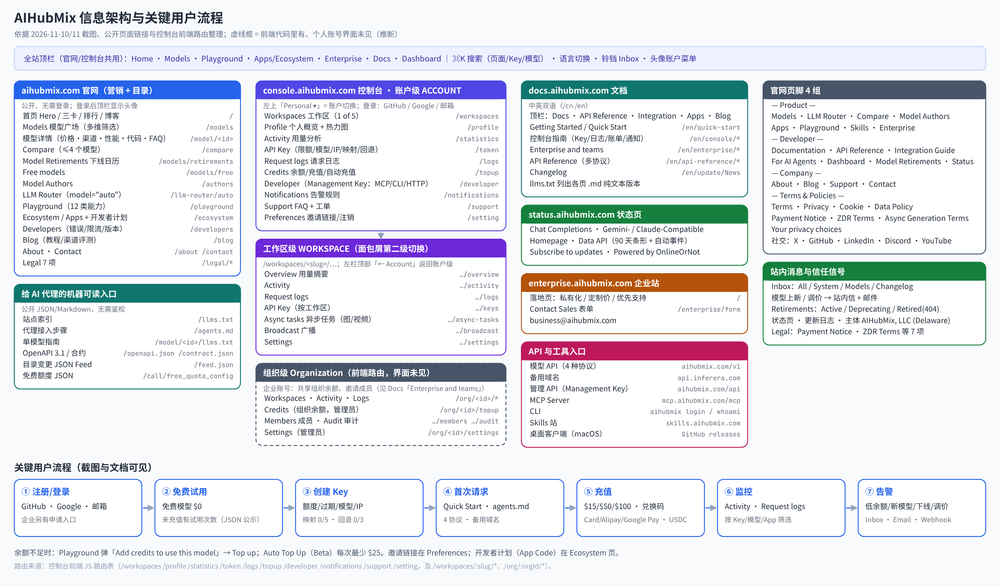

AIHubMix 深度调研：官网、控制台与开发者体验
AIHubMix 把自己定位成「统一 AI 模型网关」（官网 Hero：The Unified Gateway for AI Models），卖点是一个 Key 调多家模型、SDK 直接替换、跨云容灾，并强调走官方云渠道（llms.txt 原文：Officially authorized model reseller, deployed on Google Cloud (US)）。它面向三类人：个人开发者（控制台 + Playground）、AI 代理（llms.txt / agents.md / MCP / CLI）、企业（独立企业站 + 销售表单 + 组织/工作区）。在 2026-11-10 的成熟度排名里它得 82 分，A 级。
关键发现
- 四个子域各管一件事：官网 aihubmix.com 负责模型目录和营销，console.aihubmix.com 是控制台，docs.aihubmix.com 是文档，status.aihubmix.com 是状态页，enterprise.aihubmix.com 面向企业。官网和控制台的顶栏基本一致，未登录看目录、登录后点 Dashboard 进控制台，路径很短。
- 控制台分「账户 → 工作区」两层，代码里还有「组织」层：左栏 ACCOUNT 级 10 项（工作区、Profile、Activity、API Key、日志、Credits、Developer、通知、支持、偏好）；进入工作区后左栏换成 WORKSPACE 级 7 项，面包屑「Personal / Default workspace」两级都能下拉切换。个人账号最多 5 个工作区（显示「1 of 5」）。前端路由里还有 /org/:orgId/ 下的成员、审计、组织余额（界面未见，属推断）。
- API Key 是一个「策略对象」：创建抽屉一次填完：所属工作区、额度上限、过期时间、可用模型范围、IP 限制、结构化输出修复、模型名映射（BETA，最多 5 条）、出错回退模型（BETA，最多 3 个）。也就是说，路由、限额、白名单这些原本藏在后台的能力，下放给了每个 Key。
- 价格信息在列表页就给全：模型卡直接显示输入/输出单价、上下文、TTFT、吞吐。限时折扣用粉色胶囊写「10% off · 起止日期」，并划掉原价。详情页把同一模型的不同渠道（如 Azure / OpenAI）并排比较价格、缓存、精度、延迟、吞吐和 Uptime。图像模型按「质量×尺寸」矩阵计价，视频按秒、按分辨率计价。还有 Compare（最多 4 个）和 Router 评分表。
- 模型生命周期和服务状态都公开：Model Retirements 页列出计划下线 12 个、已下线 120 个，分 Active / Deprecating / Retired 三种状态，并给出替代模型。下线模型返回 404 model_retired，目录里删掉的返回 410。状态页按协议拆组件（Chat Completions / Gemini / Claude 兼容），可以看到 Gemini 兼容接口 90 天可用率 92.91%，11 月 4 日有事件。Inbox 单独有 Models 页签，新模型和调价都会推送。
- 把 AI 代理当作一类正式用户：公开 llms.txt、agents.md、每个模型一份 llms.txt、openapi.json、contract.json、feed.json；控制台 Developer 页用一把 Management Key 同时驱动 MCP（12 个工具）、CLI（11 条命令）和 HTTP（9 个端点），每个工具都标注需要什么凭证、是否计费。错误响应带 tid 追踪号，工单表单里有 Trace ID 字段，排障链路是通的。
- 充值、余额和告警形成闭环：充值弹窗：$15 / $50 / $100 预设 + 自定义，手续费写「Covered by AIHubMix」，支持 Alipay / 卡 / Google Pay；另有兑换码、USDC（x402）、自动充值（Beta，每次最少 $25）。余额为 0 时 Playground 直接弹「Add credits」。通知页默认低余额阈值 $1，推送到 Inbox + 邮件，也可以发 Webhook（文档写明支持 Lark / Slack / Discord / Teams）。
- 有几处没对齐的地方：模型数量的口径前后不一：首页写 730+，/models 显示 954，下线页写 Browse all 961，企业站和 llms.txt 写 500+。发票只能走工单申请。管理 API 的 GET /api/user/token 会轮换 Key（页面有黄色警告，但 GET 带副作用本身就是坑）。注册时我方域名邮箱被直接拒绝（「not allowed to access this application」），没有说明原因。
代表性截图（点图放大）
站点架构图
架构图依据三类来源：①截图里看到的导航和页面；②官网 HTML 里的链接和页脚；③控制台前端 JS 里的路由表。控制台页面的地址是从路由表推断出来的（截图时地址栏不可见）。工作区内页的地址带账号自己的 slug，所以「原网页」统一链接到 /workspaces。组织级（/org/:orgId/*）只在代码里出现，个人账号界面没有看到，图中用虚线框标出。

打开：SVG 矢量图 · PNG · Mermaid 源码
信息架构与导航
顶栏与全局组件
- 官网顶栏：Models / Playground / Ecosystem / Enterprise / Docs / Dashboard；登录后右上角显示头像。
- 控制台顶栏：Home / Models / Playground / Apps / Enterprise / Docs，加 ⌘K 搜索、语言菜单、铃铛（Inbox）。两边的主菜单几乎一致，用户从控制台回到模型目录不会迷路。
- ⌘K 能搜三类对象：页面、API Key、模型，默认列出「Latest models · November 2026」。中转站控制台里少有这一层。
- Inbox 抽屉分 All / System / Models / Changelog 四个页签，模型类消息带海报、价格和「View model」按钮。
控制台左栏（两层）
| 层级 | 入口 | 菜单 |
|---|---|---|
| 账户级 ACCOUNT | 左上角「Personal ▾」 | Workspaces · Profile · Activity · API Key · Request logs · Credits · Developer · Notifications · Support · Preferences |
| 工作区级 WORKSPACE | 面包屑第二级 / 工作区列表 | Overview · Activity · Request logs · API Key · Async tasks · Broadcast · Settings（「← Account」返回） |
| 组织级（推断） | 前端路由 /org/:orgId/ | Workspaces · Statistics · Logs · Topup · Members · Audit · Settings（管理员） |
页脚 4 组
- Product：Models · LLM Router · Compare · Model Authors · Apps · Playground · Skills · Enterprise
- Developer：Documentation · API Reference · Integration Guide · For AI Agents · Dashboard · Model Retirements · Status
- Company：About · Blog · Support · Contact
- Terms & Policies：Terms of Service · Privacy Policy · Cookie Policy · Data Policy · Payment Notice · ZDR Terms · Async Generation Terms · Your privacy choices
页脚把「For AI Agents」「Model Retirements」「Status」放在 Developer 组，说明它把这几项当作开发者的日常工具，而不是边角信息。
账户 / 工作区模型
账户 vs 工作区：AIHubMix 怎么切
- 账户（Personal） 管钱和人：余额、充值、发票、通知、偏好、Management Key、支持工单都在账户级。
- 工作区 管用量：每个工作区有自己的 Overview、Activity、日志、Key、异步任务、广播和设置。Key 创建时必须选择所属工作区，Key 列表有 Workspace、Belongs to 两列。
- 数量与标识：工作区有 slug（创建后不能改），个人账号配额为 5 个（「1 of 5」）。
- 企业：文档「Enterprise and teams」写了组织余额、工作区、成员，以及成员 Key 和系统 Key 的区别；前端有 /org/ 路由、成员邀请（/invite/org）和审计页。
推断：AIHubMix 的数据模型大致是「组织/个人账户（钱包）→ 工作区（项目）→ Key（策略）」，用量和日志都挂在 Key 上，再按工作区汇总。对中转站来说，最低成本的落地方式是把「分组/令牌分组」包装成「项目」，先不做多成员。
计费、余额与价格展示
充值与余额
- Credits 页：Total available（余额）+ Set balance reminder；Pay as you go（卡 / Alipay / Link）；Redeem code（兑换码）；Paying with USDC (x402)?；Recent transactions；发票通过工单申请。
- 充值弹窗：$15 / $50 / $100 + 自定义；Processing fee「Covered by AIHubMix」；Alipay / Card / Google Pay；底部显示当前充值的账户，避免充错号。
- 自动充值（Beta）：先保存卡，余额低于阈值自动扣款，每次最少 $25（文档同样写了最低 $15 的 Stripe 充值和 $25 的自动充值）。
- 免费额度：公开接口 free_quota_config 返回：未付费试用 10 次、每分钟 10 次、每日 100 次、每日 100 万 tokens，累计付费满 $1 视为付费用户，并给出免费模型的权重表。门槛写成 JSON 公开，方便代理和用户自己判断。
价格展示
- 模型广场 /models：多维筛选（输出模态、类别、厂商、Refine 排序和输入模态），顶部显示「954 models」和 Models API 入口。卡片有输入/输出价、Context、TTFT、Throughput、New 标、Copy ID。第一张卡就是 auto 路由。
- 折扣：粉色胶囊「10% off · 起止时间」+ 划线原价；免费模型直接显示 $0。
- 详情页：Pricing 区先给单价；Providers 区让同一个模型的多个渠道并排比较（价格、缓存价、精度、延迟、吞吐、Uptime）；Performance 区有 Uptime / Latency / Throughput 三张图；Usage 区有柱状图；还有 Try this model 代码、FAQ、Compare 入口和 More models。
- 非文本模型：图像按 Quality（Low / Medium / High / Auto）× 尺寸（1024×1024 等）给单张价格矩阵；视频按秒计价并按分辨率列出（如 720p $0.0846/s、1080p $0.141/s）。
- Compare：最多 4 个模型，比较价格、上下文、TTFT / 吞吐、LMArena 分数、真实用量和月成本估算，选择会写进 URL 方便分享。
- LLM Router：model="auto"，四种策略（auto / balanced / quality_first / latency_critical），用 X-Aihubmix-Session-Id 做会话粘性来保住缓存命中；评分表按任务分类给每个候选模型的得分、价格、TTFT，并标出 Current pick。
开发者体验（文档 / Quick Start / 管理 API / For AI Agents）
文档
- docs.aihubmix.com 有中英两版（/cn、/en），顶部是 Docs / API Reference / Integration Guide / Apps / Blog / Changelog。
- Product Introduction 页有蓝色提示，让 AI 代理先读 llms.txt / agents.md；每页有 Copy page，底部常驻「Ask a question」。
- Quick Start 同时给出主域名和备用域 api.inferera.com，代码分 Python / JavaScript / Curl 三个页签。
- API Reference 是三栏布局：左侧端点树（OpenAI / Anthropic / Vertex / Unified / Platform API），中间说明，右侧请求/响应示例，可以 Try it。
- Changelog 按发布日期列出新增模型。
面向 AI 代理（For AI Agents）
- 协议：同时支持 /v1/chat/completions、/v1/responses、/v1/messages、/gemini/v1beta 四种；图像、视频走 /ai/v1，以异步任务方式返回。
- 机器可读文件：llms.txt、llms-full.txt、agents.md、/model/<id>/llms.txt、openapi.json、contract.json、feed.json。
- 错误与限流：错误响应带 tid；限流用 RateLimit 响应头；弃用用 RFC 9745 / 8594 的 Deprecation / Sunset 头；下线模型返回 404 model_retired，目录删除的返回 410。
Developer 页：MCP / CLI / HTTP
- 一把 Management Key：MCP、CLI、HTTP 三条路共用，页面顶部直接给出（截图已遮挡）。
- MCP：可选客户端 Claude Code / Cursor / VS Code / Codex / Claude Desktop。工具表共 12 个：5 个不需要凭证，3 个需要 Management Key，4 个需要 API Key（其中 3 个计费）。下方有「Try asking」示例和排障折叠区。
- CLI：分三步 Install → aihubmix login → aihubmix whoami；命令表 11 条，标注 Read / Write；另有 Scripts and CI 的环境变量示例。
- HTTP：REST 基址 https://aihubmix.com/api，9 个端点，用 Read / Write / Destructive 彩色标签区分；黄色警告提示 GET /api/user/token 会轮换 Management Key。
对中转站的意义：多数 new-api 系的站只有「复制 Key + Base URL」。AIHubMix 把「让代理自己接入」做成了产品功能。我们不必一步做到 MCP，但 llms.txt / agents.md 加一页错误码文档，成本很低。
信任信号
- 主体与法务：运营主体是 AIHubMix, LLC（美国特拉华州）。法务页有 7 份文件（服务条款、隐私、Cookie、支付说明、ZDR、异步生成条款等），隐私政策最后更新于 2026-09-08。Payment Notice 写明：如果无法继续提供服务，会退还剩余预付余额（扣除相关费用后）。
- 公开状态页：status.aihubmix.com 使用 OnlineOrNot，按协议拆成 5 个组件：Chat Completions 99.96%、Gemini-Compatible 92.91%、Claude-Compatible 99.3%、Homepage 100%、Data API 100%，并保留自动化事件记录，可订阅更新。
- 模型下线日历：公告日、下线日、替代模型都公开，并配合 404 model_retired 错误码和弃用响应头。
- 渠道透明：详情页列出每个渠道（云厂商）的价格、精度和 Uptime；博客里有大量「同一模型、不同云渠道」的评测文章。
- 客服链路：Support 页先给常见问题卡片（401/403/429、连不上、有余额仍报错），再提供工单表单（含 Trace ID、附件、0/10000 字的描述框）。账户注销要 15 个工作日审核。
- 社会证明：生态页显示 25 个集成、1.3M+ GitHub stars、42k+ Dify 安装量；企业站显示 500+ 模型、40+ 云推理商、每周 1T+ tokens、99.9% Uptime。这些数字是 AIHubMix 自己公布的，本次未能核实。
增长：邀请、生态、企业漏斗
- 邀请：邀请链接放在 Preferences 页（带 Copy 按钮），入口不显眼。本次没有看到邀请奖励规则的页面。
- 生态 / 开发者计划：Ecosystem 页列出主流 AI 工具（Coding Agents、Agents & Workflows、Chat Clients、Developer Tools），卡片标注 Built-in / Compatible / Official plugin / Package。「Build with AIHubMix」是两步表单（App 名、网站、类别、一句话描述、Logo），卖点是 Top models / Failover / Partner rates。还有 App Code 接入说明（推断：用于把调用归因到 App，配合日志和 Activity 里的 App 维度）。
- 企业漏斗：注册卡片下方有一行「Enterprise customer? Apply for enterprise access」→ 企业站（独立子域，衬线大标题，私有化部署、定制价、优先支持、迁移协助）→ Contact Sales 表单（月推理花费区间、合规需求：私有化 / DPA 勾选）→ business@aihubmix.com。
- 内容：博客分 Tutorial / Opinion / News / Provider Benchmark / Announcement / Changelog，用渠道评测文章获取搜索流量（推断）。
- 桌面客户端：首页提供 macOS 桌面版下载（GitHub releases）。
视觉风格
- 字体：界面用 Plus Jakarta Sans，代码用 Geist Mono；企业站、Router、Compare、Retirements 等页的大标题用 Old Standard TT 衬线体（企业站还用了 Inter）。衬线标题让这些「专题页」显得更正式，但一个站同时用了三四套字体。
- 颜色：主色 --ah-primary #2563eb（偏深的蓝），背景 #fcfcfe，卡片纯白，CSS 里还有深色背景 #0b0d10（推断：支持深色模式，本次未截图）。折扣胶囊用粉色 #eb2f96，其他沿用 antd 色板。
- 形状：圆角很小（4 / 6 / 8 px），细线分隔，阴影很少，整体是偏「工具型」的干净风格。
- 组件：控制台基于 React + antd。右侧抽屉用于创建和配置（Key、告警、工单），表格支持列设置（拖拽、钉住、密度），用面包屑切换层级。
- 密度：Activity 是 KPI 行加 7 张图；模型卡信息很密，但排得整齐。
- 问题：/models 的筛选区和标签占掉了不少首屏高度（2026-11-10 调研时也提过）；控制台首页加载时只显示一个标题，空态比较单薄。
局限与缺口
- 这次没有拿到浏览器巡检的原始报告，页面清单和地址是根据截图、官网链接和控制台前端路由重新整理的。
- 控制台页面的地址取自截图时浏览器实际访问的地址，点开需要登录；登录弹窗、⌘K、站内信和 Auto Top Up 这几张弹层截图的地址是按前端路由推断的。
- 组织级（成员、审计、组织余额）只在前端代码里出现，个人账号界面没有看到。
- 测试账号余额为 0，交易记录、请求日志、用量图表都是空的，没有看到它们有数据时的样子。
- 没有新建 API Key（账号里原本就有 2 个），也没有发起付费请求。
- 模型名称（如 GPT 6.1 Terra、GPT Image 2.6 Flare、Wan2.7）和各种统计数字都照抄页面显示，未独立核实。
- 注册时我方域名邮箱被拒，登录使用的是已有账号；控制台首页只截到了加载态。